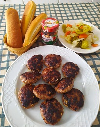
Boulettes à farce
Пържени кюфтета
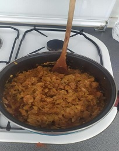
Chou blanc avec de porc
Свинско със зеле
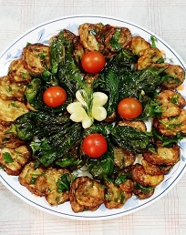
Courgettes frites
Пържени тиквички
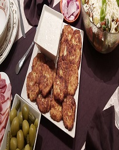
Galettes de courgettes
Кюфтета от тиквички
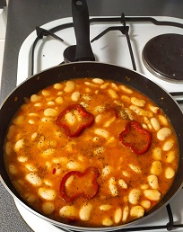
Haricot blanc
Боб яхния
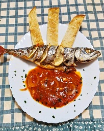
Maquereau au sauce
tomate
Скумрия с доматен сос
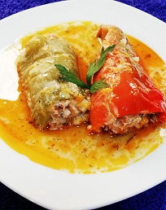
Poivrons farcis
Пълнени чушки
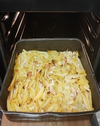
Pommes de terre au poulet
Пиле с картофи
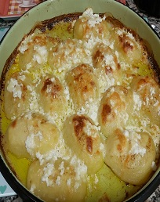
Pommes de terre
aux fromages
Надупени картофи със сирена
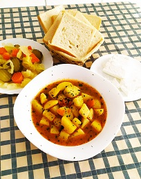
Pommes de terre plat
Картофена яхния
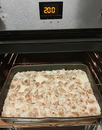
Porc au riz
Свинско с ориз
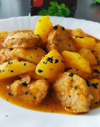
Porc aux pommes de terre
Свинско с картофи
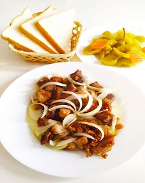
Porc avec oignons
Свинско с лук
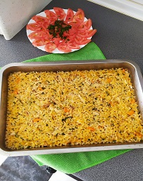
Poulet au riz
Пиле с ориз
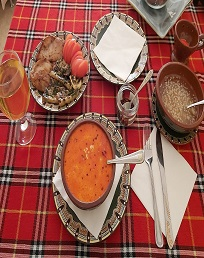
Soupe aux tripes
Шкембе чорба
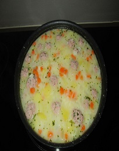
Soupe boulettes
Топчета чорба